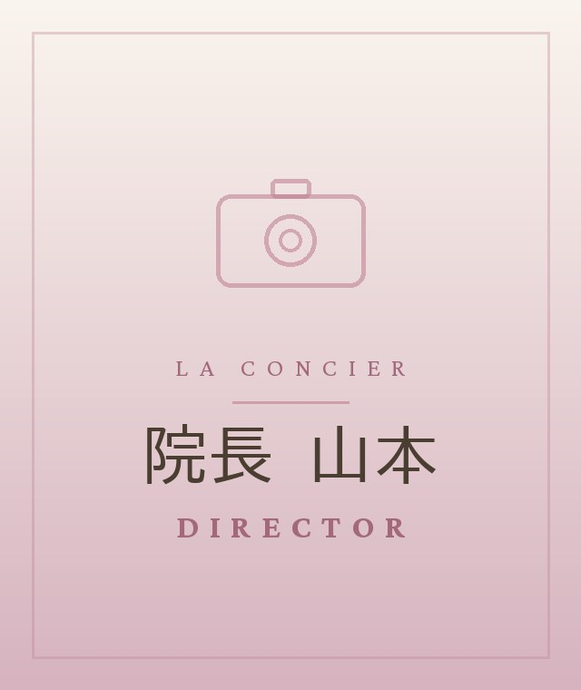

FIRST VISIT
初回限定キャンペーン
人気No.1 首肩こり改善コース ／ 産後・BMK骨盤矯正
¥7,590〜
¥3,980〜
YOUR TROUBLES
こんなお悩み、
ありませんか？
肩こり・首こり
慢性的な腰痛
産後の骨盤の歪み
姿勢・猫背が気になる
冷え・むくみ
頭痛・自律神経の乱れ
そのお悩み、女性専用のラ・コンシェル整骨院に
おまかせください。原因から丁寧に整えます。
CONCEPT
その場しのぎではなく、
「根本」から整える。
延べ10万人以上の施術実績から生まれた
「インナーマッスル × ラボ式マッサージ」。
痛みの原因そのものを土台から整え、
不調が戻りにくい身体へと導きます。
REASONS
選ばれる6つの理由
01
女性専用・完全個室
周りの目を気にせずリラックス。メイクルーム・お着替えも完備しています。
02
全スタッフ国家資格者
柔道整復師・鍼灸師による、身体を知り尽くしたプロの本格施術です。
03
根本改善へのこだわり
その場しのぎではなく、不調の原因そのものを土台から整えます。
04
丁寧なカウンセリング
タブレットを使い、身体の仕組みからわかりやすくご説明します。
05
無理な勧誘なし・都度払いOK
物品販売や強引な勧誘は一切なし。安心して長く通えます。
06
平日夜21時まで／土日祝も営業
お仕事帰りにも。当日予約も歓迎しています。
POPULAR MENU
人気の施術メニュー
GREETING

「強い刺激や無理な施術はしません。
今のお身体の状態を、
丁寧にお伝えします。」
院長 山本／柔道整復師・鍼灸師・整体師
女性専用という安心できる環境で、
お一人おひとりの不調に向き合います。
VOICE
お客様の声
★★★★★ 4.78 （23件）
★★★★★
丁寧なカウンセリングで、痛みの原因や普段の生活で気をつける点まで教えていただけました。個室なのでゆっくり過ごせます。
20代 ／ 会社員
★★★★★
産後の骨盤の歪みが気になって通い始めました。無理な勧誘もなく、女性専用なので安心して通えています。
30代 ／ ママ
※お客様個人の感想であり、効果には個人差があります。
SALON INFO
店舗情報
住所
東京都町田市原町田6-10-3 リンズパークビル4F
アクセス
小田急線 町田駅 西口より徒歩2分／JR横浜線 町田駅 北口より徒歩3分
営業時間
平日 10:10–21:00／土日祝 10:10–18:30
定休日
水曜日（土日祝も営業）